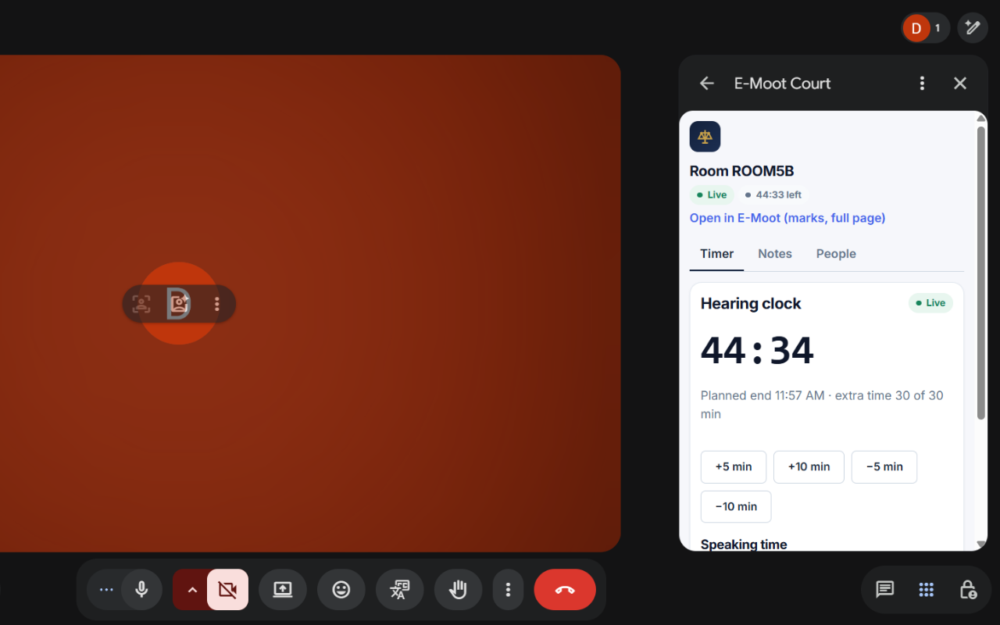

E-Moot Court
Run moot court hearings with your institution's E-Moot Court account, right beside the Google Meet™ call.
What it does
E-Moot Court manages moot court competitions: events, rounds, teams, hearing rooms and marks. The Google Meet add-on opens the hearing panel in Meet's side panel, so judges and advocates do not need a second window. It recognises the Meet call, finds the matching E-Moot hearing and shows each person only the tools of their role:
- Timer: the hearing clock, extra time and speaking time.
- Transcript: the live hearing transcript, for judges and teams.
- Team chat: a private chat for each team, seen only by its members.
- Notes: private notes for each person.
- People: who takes part in the hearing.
Marks and the full hearing page open in the E-Moot Court web app.

Who can use it
The add-on is currently available only to Google Workspace accounts of greenai.services, and only to people who have an E-Moot Court account and are seated in the hearing. Others see the message that the call is not an E-Moot hearing they are part of.
How to use it
- Join the hearing's Google Meet call.
- Open Activities and choose E-Moot Court.
- Press Sign in and allow the add-on in the window that opens.
More help is on the Support page.